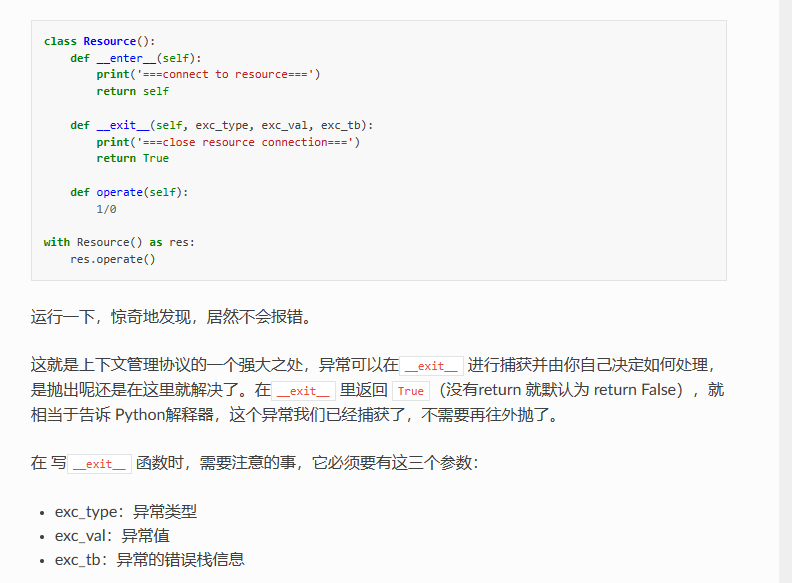

-
基础
-
学习工具
- python 官方文档
- pycharm
- 源码调试！！！！！
-
虚拟环境
- 作用
- 环境独立，不会相互干扰
- 管理工具分类
- conda
- anaconda
- 方便的管理运行环境（python 在内的主流编程语言）
- 虚拟环境标识
- （环境名）
- 切换源
- .condarc 文件
- conda 状态
- conda config –show
- 查看 config
- conda clean –all
- 清理缓存
- conda config –show
- 环境管理
- 查看所有环境和当前环境
- conda info –envs
- 查看环境的安装路径
- conda info –环境名
- 切换使用环境
- conda activate 环境名
- 退出环境
- conda deactivate
- 创建新环境
- conda create –name 环境名 python=3.9
- 重命名环境
- 直接在 envs 里面修改文件夹名字!!!!!!
- 复制环境
- conda create –name 新环境名 –clone 旧环境名
- 删除
- conda remove –name 环境名 –all
- 环境历史记录
- conda list –revisions
- conda install –rev 0
- 回退到最初版本
- 查看所有环境和当前环境
- 包管理
- 所有包信息
- conda list
- 更新包到最新版本
- conda update –all
- 出现问题, 环境回滚
- conda list –revisions
- conda install –revision 2
- 查找包
- conda search –full-name 包名
- 安装包
- 安装在当前环境
- conda install 包名
- conda install pip
- pip install 包名
- conda install 包名
- 指定环境安装
- conda install –name 环境名 包名
- 安装在当前环境
- 卸载包
- conda remove 包名
- conda remove –name 环境名 包名
- 所有包信息
- 导入导出
- conda env export > freeze.yml
- conda env create -f freeze.yml
- 运行前记得改环境名
- miniconda
- 一样的
- anaconda
- 创建环境需要先下载 python 版本
- venv
- 创建
- python -m venv 环境名
- 进入
- source 环境名/bin/activate
- 安装
- 退出
- deactivate
- 创建
- virtualenv
- 配置
- pip install virtualenv
- 增
- virtaulenv 环境名
- 删
- rm -r 环境名
- 改
- 查
- 进入
- source 环境名/bin/activate
- 退出
- deactivate
- 额外配置
_ pip install virtualenvwrapper
_ linux 版本
_ pip install virtualenvwrapper-win
_ windows 版本
_ 环境变量
_ WORKON_HOME
- 好处 _ 显示所有环境 _ workon _ 创建环境 _ mkvirtualenv -p python3 环境名 _ 删除环境 _ rmvirtualenv 环境名 _ 进入 _ workon 环境名 _ 退出 _ deactivate
- 配置
- venv
- 导出环境
- pip freeze > requirements.txt
- 导出有问题，有的没有版本号！
- 需要 pip list 二次确认
- 导出有问题，有的没有版本号！
- pip list –format=freeze > requirements.txt
- pip freeze > requirements.txt
- 导入环境
- pip install -r requirements.txt
- conda
- 目前最佳实践
- venv
- 作用
-
模块
-
第三方模块
- 本质
- 就是别人写的 py 文件
- 命令
- pip config list
- 查看源
- pip install -i https://pypi.tuna.tsinghua.edu.cn/simple django==2.2
- 加速下载！！
- pip install schedule==版本号
- 指定版本
- pip install –upgrade xxx
- 更新 xxx
- pip show
- 查看包地址
- pip list | grep xxx
- 查看指定包
- pip uninstall 模块名
- 卸载
- pip check
- pip config list
- 安装官网
- pypi
- 测试
- python
- import schedule
- python
- 配置清华园
- 本质
-
导入
-
概念
-
添加根目录为首要导包目录
-
方法 1
- linux
- export PYTHONPATH=./
- win
- cwd
- set PYTHONPATH=./
- powershell
- cwd
- linux
-
方法 2
- sys.path.insert(0, path)
-
-
当前目录
- 命令行执行的目录！！
- os.getcwd()
- 命令行执行的目录！！
-
导包目录
- 第一个就是：被执行文件的目录！！
- sys.path
- 第一个就是：被执行文件的目录！！
-
-
包，目录
- 包多一个__init__
- 这个文件优先加载
- 标识这个目录是一个包，方便导入文件
- 包多一个__init__
-
导入包的语法
- import
- py 名称.方法
- import as
- from import
- 方法（）
- from import *
- 等于 import 所有，比较方便
- import
-
方式
- 在一个包内相对导入
- 随时可迁移的一套代码，想无缝复用，把它变为包！！
- 相对引用的文件 不能执行
- 需要另外添加执行文件
- 绝对导入
- 比较简单，全部从根目录开始导入
- 重构火葬场，难以迁移
- 在一个包内相对导入
-
包名， 文件名 要区分开
-
循环 import
- 重构项目结构
- 在外层新建文件导入后使用
-
1
- 设置项目为原根
- source root
- 自定义文件
- if __name__ == ‘__main__': # 当本 py 文件是主程序时，才运行，被 import 时，不运行
- 设置项目为原根
-
-
常用包
- 1
- sys
- path
- 系统环境变量
- insert（0，）
- getsizeof()
- 占内存的大小
- 本函数名字
- 函数名.__name__
- sys._getframe().f_code.co_name
- argv
- 命令行的参数们
- python 后的所有参数
- 命令行的参数们
- 1
- stdin
- stdout
- stderr
- path
- os
- getcwd()
- 工作目录
- system（‘’）
- 执行操作系统命令
- environ
- 环境变量
- 一个字典
- 操作系统信息
- getpid()
- getcwd()
- sys
- string
- digits
- ascii_letters
- 时间
- 在自动化
- random
- 在数据分析
- urllib
- 在爬虫
- math
- pi
- prettytable
- 1
-
-
python 中， 一切皆对象
- 对象的内部结构
- type（）
- id（）
- is
- 比较 id
- is
- 值
- 对象的内部结构
-
输入输出
- print()
- self
- 当前类的对象
- *args
- 个数可变的位置参数
- sep=
- 分隔符
- end=
- 结束符
- file=
- 输出文件的目的地
- self
- input()
- 返回 str
- input().split()
- 获取多个内容
- print()
-
关系
- and
- or
- not
- in， not in
-
三目表达式
- a if 条件 else b
-
算数
- 取余%
- 判断奇偶数
- x%2 == 0
- 判断奇偶数
- 取整//
- 求幂**
- 取余%
-
内置函数
- 数学函数
- round(x，2)
- 四舍六入五留双
- 转为百分数
- 求幂
- pow(x,y)
- x ** y
- sqrt(x)
- 返回平方根
- any（）
- all()
- round(x，2)
- sorted()
- 从新创建一个来排序
- 可以排序字典，列表，元组
- 1
- key=
- 定义排序的对象
- reverse=
- key=
- 从新创建一个来排序
- 数学函数
-
进制
- 二进制
- 0b
- bin()
- 八进制
- 0o
- oct()
- 使用领域
- 权限
- 16 进制
- 0x
- hex()
- 使用领域
- uuid
- 还原 10 进制
- int（,0）
- 二进制
-
位运算
- 左移
- 二进制的增尾法，默认补 0
- «
- 变大
- 右移
- 二进制的去尾法
-
- 变小
- 异或
- ^
- 去重
- 0^x = x
- x^x = 0
- &
- |
- ~
- 左移
-
数据类型
- 使用心得
- 生成式
- 1
- [i for i in range(10 )if 1%2==0]
- [i if 1%2==0 else 0 for i in range(10 )]
- 2
- list
- [1 for _ in range(10)]
- dict
- {k: v for i in range(10)}
- tuple
- 唯一
- tuple（）
- ?
- 唯一
- set
- (x for in)
- list
- 1
- 类型判断
- type()
- isinstance()
- slice
- bytes
- int
- iterable
- iterator
- 使用方法前
- 先定义空的
- len
- 元素个数
- 常用特色
- 多重赋值
- a, b = 1, 2
- 多重赋值
- 切片
- 列表名[start: stop: step]
- 不包含 stop
- 负数的切片
- 倒序
- [::-1]
- 倒数第 5 到结束
- [-5::]
- 倒序
- 可用于 str， list
- 列表名[start: stop: step]
- 类型转换
- 1
- str->ASCII
- ord()
- ASCII->str
- chr()
- str->ASCII
- 其他转 str
- str()
- str 转其他
- 转数字
- 脆弱，需要 try
- int()
- 规定字符串的进制
- base=
- 规定字符串的进制
- float()
- int()
- 脆弱，需要 try
- eval（''）
- 相当于执行'‘内部，从 str 转为本来的样式
- list()
- dict()
- 转数字
- 1
- 生成式
- 其他常用
- collection.
- Counter()
- 统计个数神器
- most_comon()
- pop
- update
- deque()
- 双端队列
- 1
- append()
- appendleft()
- 2
- popleft()
- pop()
- clear()
- namedtuple
- 创建一个结构体的东西
- 不可修改
- 简单数据
- 方法
- 创建
- _make()
- _replace()
- 返回新实例
- 查看
- _asdict()
- 返回字典
- _fields
- 所有字段
- _asdict()
- 创建
- orderdict()
- defaultdict(lambda:“none”)
- 为不存在的 key 设置默认值
- Counter()
- itertools.
- 排列组合
- 排列
- permutations（）
- 不放回，元素不重复
- product（）
- 多组
- permutations（）
- 组合
- combinations
- 不放回，元素不重复
- combinations_with_replacement()
- 多组
- combinations
- 1
- 使用 for
- 使用 list()
- 排列
- repeat()
- cycle()
- 排列组合
- dataclass
- 可以修改
- 较复杂数据
- collection.
- 不可变类型
- 内存地址不可变
- str
- 常用函数
- 类型转换
- 连接！！！！！
- ‘'.join(lst)
- 可迭代的 list, tuple
- 元素必须为 str！！！！！！
- 可迭代的 list, tuple
- ‘'.join(lst)
- 分割
- str.split()
- 返回列表
- 参数
- sep=’‘
- 分割符
- maxsplit=
- 分割次数
- sep=’‘
- str.split()
- 连接！！！！！
- strip()
- 去掉‘\n’, 空格
- lstrip()
- 左删除
- rstrip()
- 右删除
- 判断开头
- startswith()
- endswith()
- 改
- replace(old ,new ,次数)
- 判断字串出现的次数
- count（）
- 查
- find()
- 找 substr
- 返回索引
- find()
- 类型转换
- 其他函数
- 大小写
- 1
- r’’
- 转义
- 写文件路径方便
- 转义
- b’'
- 字节数据
- 16 进制
- 字节数据
- f''
- 格式化方便
- 大括号的个数最好为奇数
- 偶数就失效了
- 格式化方便
- r’’
- 2
- 格式化
- f’str{a},{b}str'
- ‘%dstr%s’ % (a, b)
- 日志推荐
- ‘{}str{}’ .format(a, b)
- 精度
- 1
- f'{num:10.3f}'
- f'{num:.2%}'
- 浮点数用%显示
- f'{num:.2e}'
- 科学计数法
- ‘{:.2f}’ .format(num)
- :.2f
- :+.2f
- ‘%.2f’ % num
- 1
- 填充
- f“{var:^100}”
- 两侧填充 保持 100
- f“{var:>100}”
- 左侧
- f“{var:<100}”
- 右侧
- f“{var:^100}”
- 格式化
- 加单引号，双引号
- ‘"’
- 反斜杠转义
- ‘"’
- 与 bytes 的转换！！！
- encode（）
- encoding=
- ’UTF_8‘
- ’GBK‘
- encoding=
- decode（）
- encode（）
- 计算
- 乘法
- 只能是整数
- 相当于复制
- 只能是整数
- 乘法
- 常用函数
- bytes
- 网络传输,内存存的是字节数据
- 需要 encode()
- 密码学
- 网络传输,内存存的是字节数据
- number
- 复数
_ 实部
_ 虚部+虚数单位
_ 虚数单位
_ j/J
- 共轭复数
- 虚部互为相反数
- 数学标识
- z=a+bi
- i^2=-1
- 复数的模
- （a^2+b^2）开根号
- z=a+bi
- 共轭复数
- 无穷
- float(‘nan’)
- float(‘inf’)
- float('-inf')
- 复数
_ 实部
_ 虚部+虚数单位
_ 虚数单位
_ j/J
- 元组
- 创建
- 地址不可变
- ()
- （a, b, [c, d]）
- (a,)
- [c, d]内部的 value 可改变
- 但是 id 不可变
- 查
- 遍历
- for in
- 遍历
- 创建
- str
- 内存地址不可变
- 可变类型
- 使用心得
- 深浅拷贝
- 浅拷贝
- copy.copy()
- 复制顶层元素，嵌套元素则是引用
- copy.copy()
- 深拷贝
- copy.deepcopy()
- 可变类型常常用
- 浅拷贝
- 慎用=
- 会改变 id（），就不是一个内存，不是一个东西了
- 使用深拷贝
- 循环删除
- 应该新创建一个
- 推导式
- 循环删除
- .copy
- 两次循环
- 一次查找，一次删除
- 应该新创建一个
- 深浅拷贝
- 列表!!
- 创建
- []
- 更快
- list()
- []
- 增删改查
- 获取元素方法
- 下标
- 正数
- 从 0 开始
- 负数
- 最后的元素下标是-1
- 正数
- 切片
- lst[:m] = lst2
- lst[:]
- lst 的浅拷贝！！！
- 下标
- 添加
- append（不可迭代）
- extend(可迭代）
- insert（索引，值）
- 删除
- pop（索引）
- 需要非空！！！！！
- pop(0)
- pop(-1)
- 需要非空！！！！！
- del
- remove（值）
- clear()
- 清空
- 返回索引
- index（）
- 统计个数
- count（）
- pop（索引）
- 获取元素方法
- for in
- 列表推导式
- filter
- 高端玩法
- 转换 dict
- enumerate([], start)
- start
- 开始序号
- 实际使用
- for key, value in enumerate(lst):
- start
- zip()
- {x:y for x ,y in zip(list1, list2)}
- enumerate([], start)
- zip
- 转置
- zip（*)
- 转置
- 计算
- 乘法
- 只能是整数
- 相当于复制列表内容
- 【2】*4
- 【2，2，2，2】
- 【【2】】*4
- 【【2】，【2】，【2】，【2】】
- 只能是整数
- 加法
- 【1】+【2】
- 【1，2】
- 【【1】】+【2】
- 【【1】，2】
- 【【1】】+【【2】】
- 【【1，2】】
- 【1】+【2】
- 降维度
- sum(二维，[])
- 第二个是起始值
- sum(二维，[])
- 乘法
- 转换 dict
- 排序
- sort
- 会直接改变本身的列表
- 归并排序
- nlogn
- 1
- reverse=1
- 降序
- key 函数
- key=lambda x: x[‘key’]
- 匿名函数
- key=lambda x: x[‘key’]
- reverse=1
- sort
- 创建
- 字典!!
- 创建
- {a:1, b:2, c:3}
- 更快
- dict(a=1, b=2, c=3)
- {a:1, b:2, c:3}
- 增删改查
- 获取
- 1
- keys()
- values()
- items()
- 2
- get（‘K1’， ‘默认值’）
- 获取 value
- 没有返回 None
- dic[key]
- 需要确保 key 存在于 dic 里面
- get（‘K1’， ‘默认值’）
- 1
- 添加
- dic[] = x
- 删除
- 删除一条
- .pop(‘K1’)
- 返回 V1
- del dic[key]
- 需要确保 key 存在于 dic 里面
- .pop(‘K1’)
- 删除所有
- dic.clear()
- 删除字典
- del dic
- 删除一条
- 获取
- 更新字典
- update()
- 只更新本字典，嵌套字典不能更新，而是替换
- pydantic.utils.deep_update
- 深度更新
- update()
- for in
- 可指定遍历对象
- 默认获取 key
- for key, value in dict().items():
- 可指定遍历对象
- 底层实现
- 使用哈希表来实现的
- 创建
- 集合
- 单个元素的 字典
- 增删改查
- 增
- add（单个）
- update（多个）
- 删
- discard（x）
- x 不存在，跳过
- remove（x）
- x 不存在报错
- discard（x）
- 增
- 数学操作
- 关系判断
- ==
- 子集
- issubset
- 超集
- issuperset
- 没有交集
- isdisjoint
- 求值
- 交集
- intersection
- &
- 并集
- union
- |
- 差集
- difference
-
- 对称差集
- symmetric_difference
- ^
- 交集
- 关系判断
- 空集合
- set()
- 唯一方法
- set()
- 使用心得
- 使用心得
-
逻辑控制
- 分支
- if
- 简写
- a if else b
- 简写
- if
- 循环
- 一定次数的循环
- for in
- range（start,stop,step）
- 倒序
- reversed（）
- 【：：-1】
- 倒序
- range（start,stop,step）
- for else
- break 就不执行 else
- for in
- 次数不定的循环
- while
- 结构
- 初始，判断， 变化 i
- 循环体
- while 嵌套
- 条件需要加上
- 结构
- while
- 一定次数的循环
- 分支
-
函数
- 概念
- 创建
- def name(形参)：
- 形参
- 默认形参
- 写在最右边
- 接受任意个数可变参数的形参写法
- 位置形参
- def fun1(*arg)
- 关键字形参
- def fun1(**arg)
- 位置形参
- 默认形参
- 主体
- 返回值
- return rst
- 形参
- def name(形参)：
- 调用
- 函数名(实参)
- 传参方式
-
-
- 后面是关键字
-
- 位置
- 实参写法
- 传列表
- (*lst)
- 解包列表的元素
- (*lst)
- 传列表
- 实参写法
- 关键字
- 实参写法
- 传字典
- (**dic)
- 解包字典的元素，keys 是关键字名，values 是关键字值
- (**dic)
- 传字典
- 实参写法
- /
- 前面是位置
- ?
- 前面是位置
-
- 传参类型
- 默认是传引用，就是传递本身！！！！！
- 可变对象
- 直接改变
- 不可变对象
- 地址改变
- 可变对象
- 默认是传引用，就是传递本身！！！！！
- 传参方式
- 函数名(实参)
- 创建
- 特殊且重要的函数
- 递归函数
- 概念
- 自己调用自己的函数
- 组成
- 终止条件
- 自己调用自己
- 回调函数
- 作为参数使用的函数
- 匿名函数
- 好处
- 节省内存
- 只有可变对象才可以
- 不用写名字
- 只使用一次
- 节省内存
- 使用
- name = lambda arg, arg2: expresstion
- 不能使用 if for while
- 不用 return
- name(arg)
- name = lambda arg, arg2: expresstion
- 好处
- 概念
- 递归函数
- 函数属性
- 体会
- 写函数避免嵌套过多
- 多用关键字传参
- locals()
- dict 类型， 局部变量以字典形式返回
- 概念
-
异常
-
报错
- 手动抛出异常
- raise Exception('')
- raise
- 直接抛出
- assert flag， f‘msg’
- python -o
- 可以跳过 assert
- python -o
- 手动抛出异常
-
不报错
- try 大法
- 结构
- try
- 1
- except xxx
- except xxx
- except BaseException as e:
- print(e)
- print(e.__repr__())
- traceback
- format_exc()
- 错误字符串
- print_exc（file=open(‘Errorlog.txt’, ‘a’))
- 写 log
- format_exc()
- 不处理就 raise
- e 是异常的实例对象
- else
- finally
- 作用域！！
- 结构
- try 大法
-
baseexception
- keyerror
- typeerror
- indexerror
-
-
类
-
优先使用类写代码
- 考虑组合，继承的关系
-
类的概念
- 属性
- 方法
-
创建类
- class A（object）：
-
定义
- 对于将要创建的对象进行抽象
-
1
-
继承祖宗
-
object
-
顶级父类
-
重要的属性和方法
-
查看
- 重要
- dir（类名）
- 可以看类的方法
- obj.__dict__
- 查看对象的属性
- dir（类名）
- obj.__class__
- 查看实例化这个对象的类
- class.__mro__
- 查看继承关系链
- 查找优先级
- 从左到右
- 查找优先级
- 查看继承关系链
- class.mro（）
- class.__bases__
- 查看父类们
- class.__subclasses__（）
- __name__
- 重要
-
__init__()
- 初始化属性的函数
- 一行流初始化
- 初始化属性的函数
-
__new__()
- 创建类对象的实例对象
- return super().__new__()
- 使用
- 单例模式
-
直接打印对象
- 必须 return 字符串
- __repr__
- 直接打印 obj
- 重写
- __str__
- 默认输出对象的内存地址
- 需要 print(obj),才能打印
- 会调用__repr__
- __repr__
- 必须 return 字符串
-
__del__
- 析构函数
-
-
-
-
实例化祖宗
- type
- 元类
- 作用：创建类
- 所有类的类型
- type
- 顶级元类
- type（name, tuple, dict()）
- 手写元类
- 继承（type）
- 元类使用
- 元类
- type
-
-
n 大特性
- 封装
- 属性
- 分类
- 实例属性
- 一般都写在__init__()
- self.属性名
- 分类
- 公有
- self.age = age
- 1
- 私有
- self.__sex = sex
- 两个下划线
- 不能被外部直接访问
- 两个下划线
- self.__sex = sex
- 访问权限控制
- 特点
- 会先于__init__()执行!!!!
- get,set 的装饰器写法
- @property
- 方法变属性
- 获得 age
- 不能修改
- 适用范围
- 简单的只读属性
- 方法变属性
- @age.setter
- 修改 age
- @age.deleter
- 删除 age
- @property
- 特点
- 私有
- 公有
- 分类
- self.属性名
- 一般都写在__init__()
- 类属性
- 单独写在类的方法外
- max_score = None
- 使用类名访问更改
- 一般放置对象的统一属性
- 所有对象默认共享，可以单独修改
- 单独写在类的方法外
- 实例属性
- 分类
- 方法
- 分类
- 实例方法
- 第一个参数是 self
- 类方法
- 第一个参数是 cls
- 可以用来做第二个初始化函数
- return cls()
- @classmethod
- 静态方法
- 既不使用 self，也不使用 cls
- @staticmethod
- 实例方法
- 分类
- 动态绑定
- 见高级之进阶
- 属性
- 关系
- Is-A
- 继承
- 多态对于同一级别的类
- 概念
- 同一个方法，不同的对象调用，产生不用的结果
- 方式
- 重写
- 父类方法不能满足子类需求，子类重写父类的方法，函数名相同
- 举例
- 重写__init__()
- 调用父类方法
- 类名(self)
- super().__init__()
- 调用父类方法
- 其余方法，不掉用父类方法也可以
- 重写__init__()
- python 不继承也可以，只要有同名方法
- 重写
- 里氏替换
- 概念
- 子类对象完全替代父类对象，不能出错
- 遵循方法
- 写抽象方法！！！！
- 可以修改抽象方法
- 重写的时候 宽进严出
- 概念
- 概念
- 1
- 1
- Has-A
- 关联
- 分类
- 合成/组合
- 人类
- 手类
- 聚合
- 学生类
- 班级类
- 单向
- 双向
- 合成/组合
- 分类
- 关联
- Use-A
- 依赖
- 一个类有时候需要另一个类来做事情
- 依赖
- Has-A
- 用法
- 一个类的对象作为属性传参给另一个类
- 1
- Is-A
- 封装
-
1
- callable()
- 1
- getattr()
- obj.属性
- 动态添加删除
- delattr()
- del obj.属性
- setattr()
- obj.属性 = val
- delattr()
- getattr()
- hasattr
- 返回布尔值
-
面向对象进阶
- 动态绑定
- 动态绑定属性
- obj.sex = ‘man’
- 动态绑定方法
- 实例方法
- types.Methodtype(func, obj)
- 类方法， 静态方法
- obj.fun1 = fun2
- 实例方法
- 限制属性
- __slots__ = ()
- 动态绑定属性
- 比较运算符
- 迭代
- 实现__iter__()
- 就是可迭代对象 iterable
- 能使用 for 循环遍历的对象
- list
- dict
- str
- tuple
- range
- 迭代器
- 。。。
- 特点
- 可重复遍历
- 非惰性，消耗内存
- 可以任意访问下标
- 能使用 for 循环遍历的对象
- for 能跑，就是调用这个函数！
- 实现原理
- 返回迭代器
- 就是可迭代对象 iterable
- 同时实现__iter__(),__next__()
- 就是迭代器
- 把列表转化为迭代器
- iter(lst)
- 特点
- 惰性生产元素，节省内存
- 把列表转化为迭代器
- 就是迭代器
- 生成器
- 概念
- 制造迭代器
- 类型
- 类中实现__iter()__方法的对象
- 有 yield 关键字的函数
- 创建
- 生成器函数
- yield
- yield 相当于 return，不同之处在于 yield 结束后会保存此时函数的状态。
- yield
- 返回生成器
- g1 = g_func()
- 生成器函数
- 创建
- 列表生成式改为（）
- 遍历
- for i in g1
- 有安全限制
- next（）
- 改变游标
- 内置__next__()
- for i in g1
- list(g1)
- 与迭代器区别
- send()
- 可以设置值
- send()
- 概念
- 元素操作
- __getitem__()
- __setitem__()
- __delitem__()
- __contains__()
- __len__()
- 实现__iter__()
- __call__()
- 对象可调用
- 把实例对象当方法使用
- 类名()()
- 把实例对象当方法使用
- 装饰器工厂
- 可用 callable()测试
- 用函数也可以通过
- 对象可调用
- with/上下文
- 作用
- 无论是否发生错误，一定会执行 exit（）里面的东西，进行退出操作！
- 必须实现的魔法方法
 - 解释器忽略错误
- return 其他，会继续报错
- contextmanager
- 顺序
- with enter as obj exit
- 作用
- 描述符
- 一个类中 实现了其中之一 就是描述符
- __get__()
- __set__()
- __delete__()
- 作用
- 可以控制属性的类型， 范围
- 比 property 更高级
- 描述符 通过类属性 实现属性限制
- 一个类中 实现了其中之一 就是描述符
- 枚举类
- 创建
- name = Enum(‘name’, ())
- 功能
- __members__
- name[''].value
- name().name
- auto()
- 自动从 1 开始生成
- @enum.unique
- 强制设置为不重复的枚举类
- 创建
- 动态绑定
-
特殊方法
-
运算符
-
创建删除
-
属性
-
上下文
- enter
- exit
-
可调用
- call
-
迭代
- iter
- next
- reveesed
-
容器
- len
- contains
-
数值
-
字符串
-
-
定制数据结构
- 应该使用
- collections
- UserDict
- UserList
- collections
- 应该使用
-
抽象类
-
-
设计模式
-
架构类型
- 分类， 分模块
- 微服务架构
- 特点
- 每个服务可独立执行
- 分治思想
- 分类
- 一个类一个表，一个服务
- 多 docker
- k8s
- 需要有人编写公共模块
- 服务之间松耦合
- 通信
- restful api
- 消息队列
- rpc
- 通信
- 特点
- 单体架构
- 1
- mvc
- 每个服务不可独立执行
- 联合起来可以有效执行
- 1
- 微服务架构
- 分类， 分模块
-
文本操作
- 在自动化
-
编码解码
- 已知场景
- 1
- io 文件操作
- 数据库操作
- 网络传输
- 1
- 1
- encode
- decode
- 已知场景
-
学生管理系统
- 解决一个这个就算入门！！！
- 先处理内存，再处理硬盘
- 面向过程
- 界面
- 主函数
- 逻辑
- while
- continue
- break
- if， else
- return
- while
- 不要写成一锅粥，分开步骤
- 逻辑
- 数据类型
- 文件存取
- r
- r,w,a
- 是一个完整的大循环
- 变量命名
- 启动
- main
- 提高
- 初始化变量
- if not
- 面向对象
- 先写整体框架
- 代码设计
- 类的设计
- 启动程序的 py 文件
- 数据类型
- 代码设计
- 先写整体框架
-